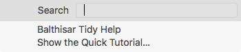

Help
Balthisar Tidy for Work uses standard Mac OS X menus that an experienced or novice user should find self-explanatory. The menu items’ descriptions below are limited to the features unique to Balthisar Tidy for Work.

The File menu is a completely standard Macintosh File menu, plus the addition of the Show the Quick Tutorial… menu item, as described in Show the Quick Tutorial.